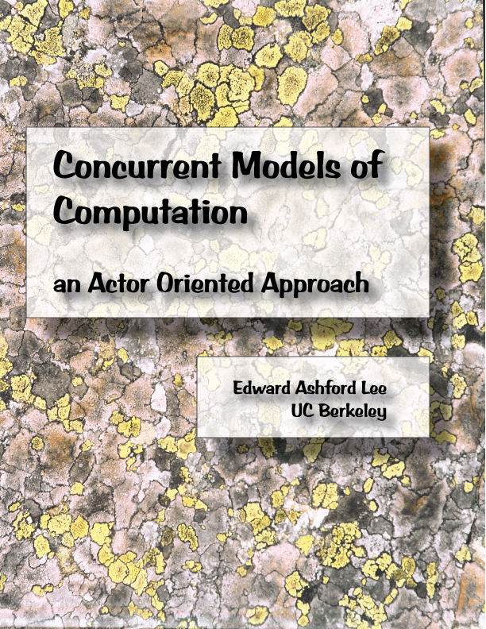

|
Edward A. Lee, Concurrent Models of Computation: An Actor-Oriented Approach, Ptolemy.org, Download Draft Version 0.02, 2011.
This very preliminary text covers the theory of concurrent models of computation (MoCs) with applications to software systems, embedded systems, and cyber-physical systems modeling. Topics include analysis for boundedness, deadlock, and determinacy; and formal semantics (fixed point semantics and metric-space models). The MoCs covered include process networks, synchronous/reactive, concurrent state machines, dataflow, rendezvous (e.g. CSP, CCS), time-triggered models, discrete-events, and continuous-time models. Compositions of MoCs, such as hybrid systems and Statecharts, are also be included.
|